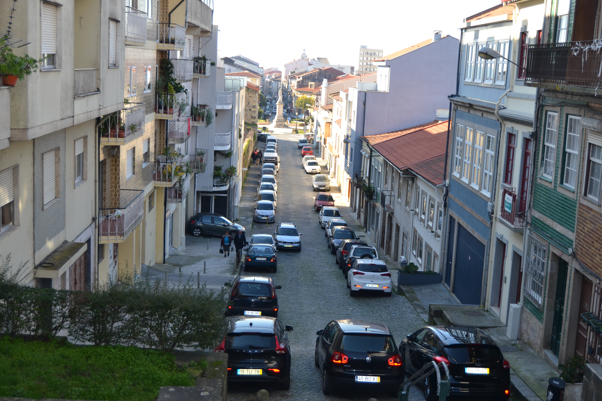

Rua de Nossa Senhora de Guadalupe - Vista norte.Rua de Nossa Senhora de Guadalupe - Vista sul

Imagem atual da RuaImagem atual da Rua
Rua íngreme, pertencente ao complexo urbanístico do campo Novo, ligava
a Capela de Guadalupe à praça do Gavião.
Aberta também em 1725, tinha já, nesta data, quase todas as suas casas
construídas, no lado Norte. Eram simples, na sua grande maioria de um só piso,
e que, contrariamente à rua de S. Gonçalo, se estendiam pela encosta acima, até
à rua em Frente de Nossa Senhora de Guadalupe.
Na parte Sul estavam apenas construídas 2 habitações, sensivelmente no meio
da rua, na parte plana. Eram edifícios de 2 pisos, em pedra, mas de desenho
tradicional. Infelizmente o desenho está um pouco destruído, cortando todo o piso
térreo da casa do prazo n.º 9 e um pouco da do anterior.
Todas as 17 casas aqui apresentadas são prazos do Cabido.
Ainda hoje é denominada rua de Guadalupe.
Lista de Casas
Casa Número: 1 e 2
Enfiteuta: D. Agostinha Maria de Barros Gavião, enfiteuta principal do prazo do casal dos Chãos ou Quinteiro.
Foro: Desconhecido
Descrição: «Chãos de casas» do prazo do casal dos Chãos ou Quinteiro.
O chão n.º 1 confronta, do poente, com o chão n.° 26 da Praça do Gavião.
Casa Número: 3, 4, 5 e 6
Enfiteuta: D. Agostinha Maria de Barros Gavião, enfiteuta principal do prazo do casal dos Chãos ou Quinteiro.
Foro: Desconhecido
Descrição: Pertencem ao casal dos Chãos ou Quinteiro.
Nos livros dos prazos do cabido não se
encontram escrituras de subemprazamento.
Casa Número: 7
Enfiteuta: D. Agostinha Maria de Barros Gavião, enfiteuta principal do prazo do casal dos Chãos ou Quinteiro.
Foro: Desconhecido
Descrição: Ursula Vieira, e suas irmãs, Vitoriana Josefa e
Joana Antónia, pagam 1200 reis ao enfiteuta do
prazo do casal dos Chãos ou Quinteiro, à face
do qual foi subemprazada em 1745.
Casa Número: 8
Enfiteuta: D. Agostinha Maria de Barros Gavião, enfiteuta principal do prazo do casal dos Chãos ou Quinteiro.
Foro: Desconhecido
Descrição: António Gomes, pedreiro, casado com Ana Gomes,
paga 1200 reis ao enfiteuta do prazo do
casal dos Chãos ou Quinteiro, à face do qual
foi subemprazado em 1725.
Casa Número: 9 a 17
Enfiteuta: D. Agostinha Maria de Barros Gavião, enfiteuta principal do prazo do casal dos Chãos ou Quinteiro.
Foro: Desconhecido
Descrição: Luís Cardoso Coutinho de Oliveira, casado com
Antónia José Leonor de Vasconcelos, paga
7800 reis ao enfiteuta do prazo do casal dos Chãos ou Quinteiro,
conforme o subemprazamento de 1740.
Casa Número: 18 a 27
Enfiteuta: D. Agostinha Maria de Barros Gavião, enfiteuta principal do prazo do casal dos Chãos ou Quinteiro.
Foro: Desconhecido
Descrição: «Chãos de casas» do prazo do casal dos Chãos ou Quinteiro.
O chão n.° 18 confronta, do
nascente, com a rua em frente de N. Sra. de Guadalupe.
Casa Número: 28 e 29
Enfiteuta: D. Agostinha Maria de Barros Gavião, enfiteuta principal do prazo do casal dos Chãos ou Quinteiro.
Foro: Desconhecido
Descrição: Pertencem ao casal dos Chãos ou Quinteiro, a
cujo enfiteuta se paga foro. Nos livros dos
prazos do cabido não se encontram escrituras de
subemprazamento.
Casa Número: 30 a 35
Enfiteuta: D. Agostinha Maria de Barros Gavião, enfiteuta principal do prazo do casal dos Chãos ou Quinteiro.
Foro: Desconhecido
Descrição: «Chãos de casa» do prazo do casal dos Chãos ou Quinteiro.
O n.° 35 confronta, do poente,
com o n.° 27 da Praça do Gavião.